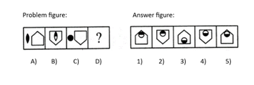

Q.1)
Pick the odd word from the given list
- Lamprey
- Rhea
- Bass
- Trout
Answer :Option B
All the others except Rhea, are names of fishes
Q.2)
Pick the odd one out from the given pair of words
- Peace:Fight
- Rough:mooth
- Coward:Timid
- Taciturn: Talkative
Answer :Option C
Except for pair C, all of the words are antonyms. The terms in option C, on the other hand, are synonyms
Q.3)
Find the odd number in the below list.

- 7141
- 7521
- 8154
- 7171
Answer :Option C
All the other numbers, except for option C, start with 7 and ends with 1
Q.4)
Choose the word which is different from the rest
- curd
- Butter
- Oil
- Cheese
Answer :Option C
All except Oil are products obtained from milk
Q.5)
Choose the word which is different from the rest.

- Sharp
- Thin
- Large
- Small
Answer :Option A
All except Sharp are related to dimension